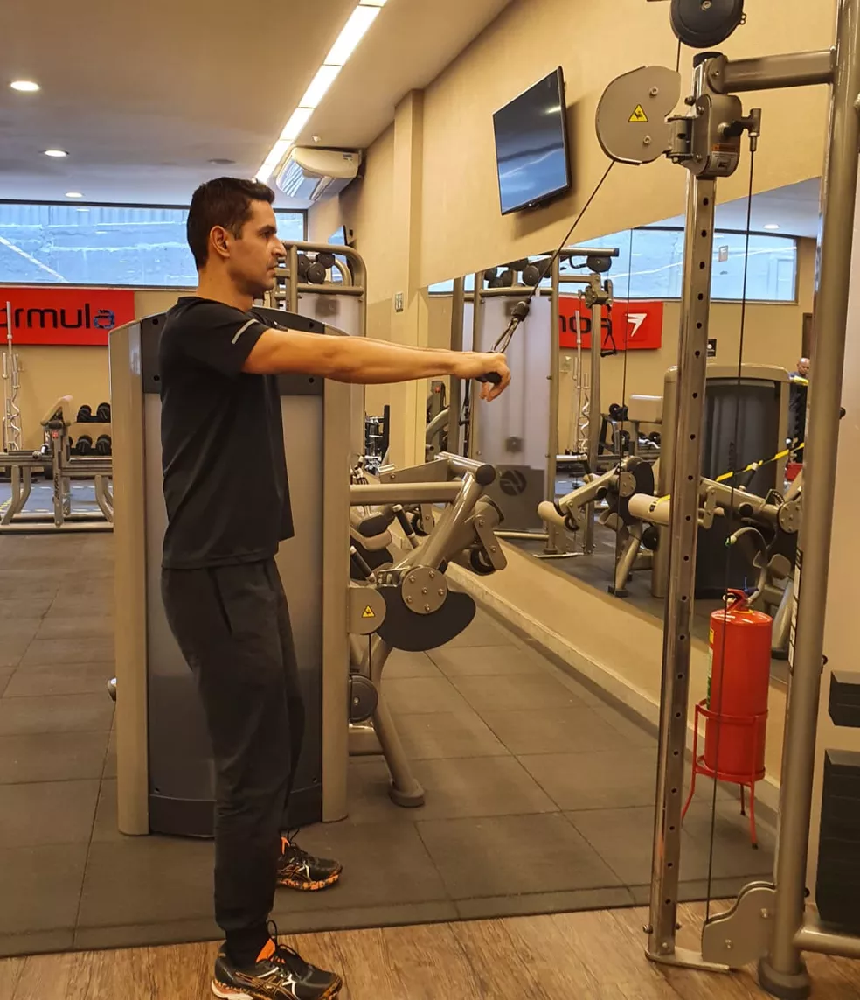
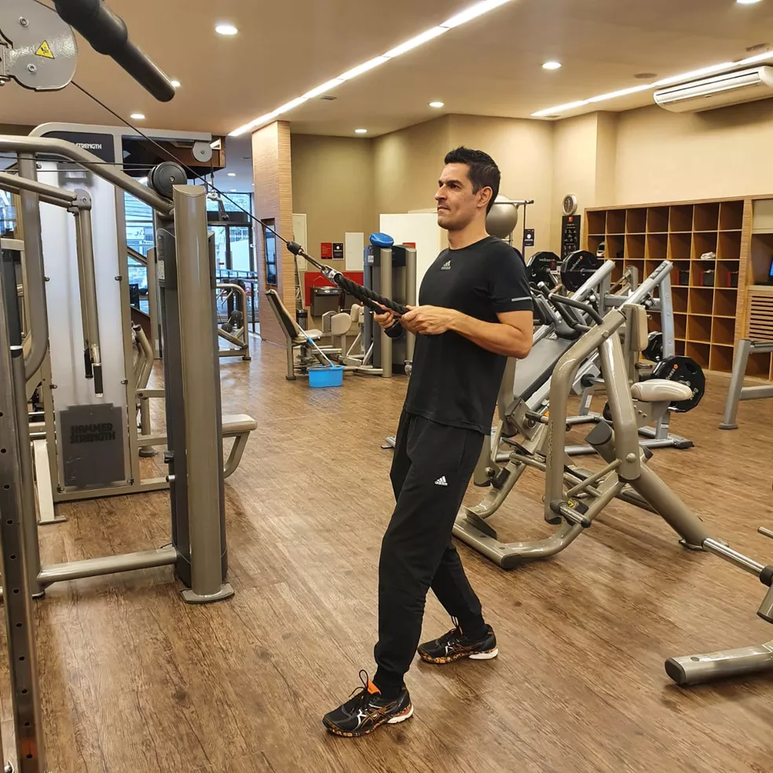
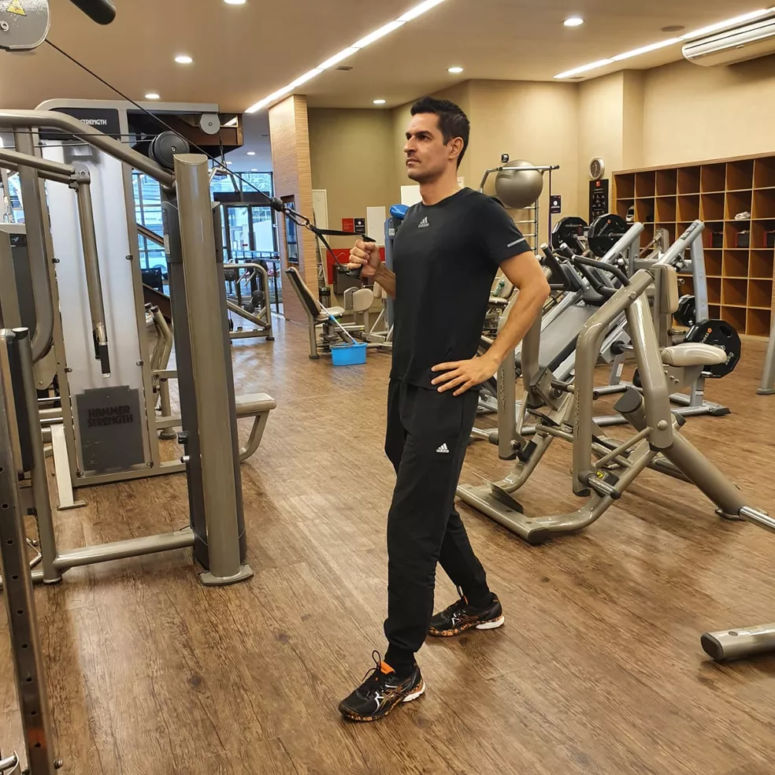
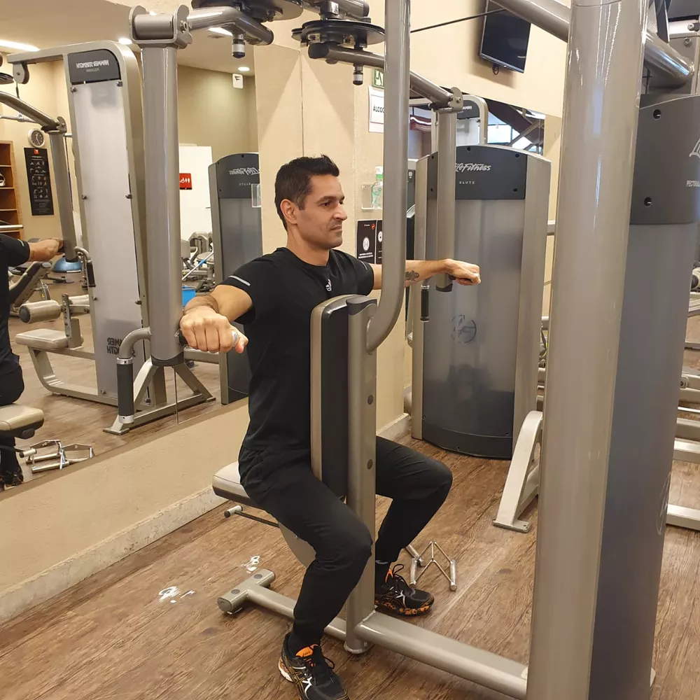

Puxada aberta no pulley
Como executar: sentado de frente para o aparelho pulley, realizar uma flexão de cotovelo, levando a barra em direção ao queixo, e estendê-lo novamente, realizando assim o movimento completo.
Flexão de ombros no cross
Como executar:corpo ereto e os joelhos semiflexionados, estender totalmente os braços e levá-los em direção às coxas, fazendo uma flexão de ombro.
Remada com corda na polia alta
Como executar: utilizando a corda do aparelho como implemento, realizar uma flexão de cotovelo e estender os braços novamente. Para se posicionar adequadamente, atenção à base. Como o profissional de Educação Física demonstra na foto acima, mantenha uma perna à frente e outra atrás.
Remada unilateral na polia alta
Como executar: com as bases trocadas, por exemplo, a perna esquerda à frente enquanto o braço direito executa o exercício, fazer uma flexão de cotovelo, seguida de extensão, com a pegada semipronada, em que o dorso da mão fica virado para fora. Realizar o movimento em ambos os lados. Após concluir o exercício com o braço direito, portanto, executá-lo com o esquerdo.
Voador dorsal
Como executar: nesse aparelho, abrir e fechar os braços fazendo um crucifixo inverso. Atenção para não dobrar os cotovelos e para manter a pegada na linha do ombro.
